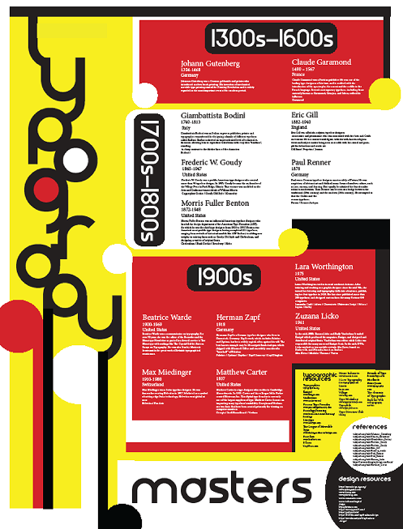

Michael Ehlman
W
O
R
K
S
Typography
Posters

I created this poster in my Typography class. History’s greatest typographers were meant to be highlighted in this work. The design uses grid layout to help organize the section into clear historical sections. The design is inspired by modernist and Bauhaus aesthetics with the use of primary colors, geometrical shapes, and asymmetrical balance.
I created the second poster in my Intro to Graphic Design class my freshmen year. We were tasked with making a book remake ,and I chose to do a horror theme. The design was meant to show how a puppet that is manipulated by its master.
I created the third poster in my Advanced Typography class using a font that I created. The assignment involved making a poster that reflects your daily life. I also chose the hourglass theme as I thought it fit the theme well.